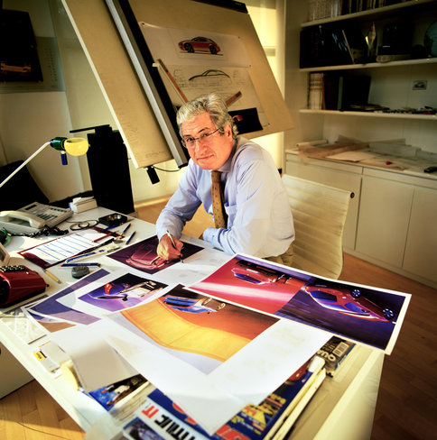

Giorgetto Giugiaro

Giugiaro is one of the most popular names in the automotive world, mostly thanks to the fact that Giorgetto managed to build up an impressive portfolio of cars which made history all around the world. Giorgetto Giugiaro was born in 1938 in Garessio, Italy and grew up in a family of artists: his father was a painter while his grandfather worked as a church painter. Obviously, Giorgetto's father wanted him to become a painter too but, due to the hard living of the artists, the boy was encouraged by one of his professors to start looking for other disciplines where he could get higher paychecks based on his drawing talent.
Although he still aimed to become a painter, Giorgetto took his first job when he was 17, working for Fiat at the Italian company's styling center. Due to the fact that Fiat was quite a large company and gaining experience was a pretty difficult job, Giorgetto decided to leave Fiat in December 1959 in order to work as the head of Bertone's styling center. The six years spent at Bertone were extremely important for Giugiaro, being described as the period which prepared him for founding and heading his own design company. After a few years working for Ghia, a coachbuilding firm established in 1915, Giugiaro started his own company in February 1967, dubbed Ital Design.
From that point on, Giorgetto Giugiaro started influencing the automotive industry and contibuted to its evolution much more than in the previous years. Through Italdesign, Giorgetto designed a huge number of mass-production cars, including popular models owned by brands such as Alfa Romeo, BMW, Ferrari, Ford, Lamborghini or Maserati. In addition, Giugiaro was responsible for the look of numerous concept cars, such as Bugati EB218, Maserati Buran, Formula Hammer or the 1994 Firepoint.
Obviously, his works helped Giugiaro gain a remarkable number of prestigious awards but the most important was surely the “Car Designer of the Century” distinction offered in December 1999 in Las Vegas. Giorgetto “competed” against no less than 24 famous car designers, including Jean Bugatti, Nuccio Bertone, Marcello Gandini and Bruno Sacco, but the 132 journalists-jury decided that Giugiro must receive the award.
Other notable designs include Audi 80, BMW M1, Maserati Bora, Lancia Delta, Cadillac Sixty Special, Saab 600 and Bugatti EB 118, although the whole number of Giugaro-designed vehicles goes above 100.
One of the most important milestones in Giorgetto's designing life took place in 1970 when he started the formerly named “folded paper” period. During the '70s, Giorgetto designed cars mostly based on straight lines and sharp edges, a design technique later adopted by most car manufacturers around the world.
Obviously, it influenced the evolution of the automotive industry a lot, a fact that attracted criticism from car enthusiasts who were aiming for more modern and stylish looks. For instance, Fiat Croma, De Lorean DMC-12, FSO Polonez, the first generation Volkswagen Passat and multiple Hyundai models were all designed by Giugiaro during the '70s and were mostly based on the design elements mentioned above.
Lancia Megagamma, a concept car which never entered mass production but served as development platform for similar models.
Giorgetto's Italdesign evolved a lot in the last few years and it's market coverage has been expanded to engineering and testing, although it also owns several subsidiaries addressed to different sides of the market, such as communications and telephones, watches, photo industry or computers. However, one of the hardest-to-reach dreams of Giorgetto Giugiaro is to work for the design of high-tech devices, such as the space industry.
His most recent designs include Alfa Romeo Brera (2002), Afla Romeo 159 (2006), Maserati Spyder (2002), Fiat Croma (2005), Ford Mustang Giugiaro (2006) and Fiat Grande Punto (2005).